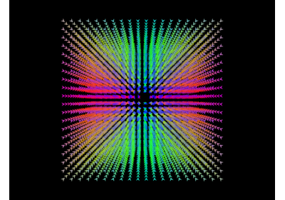
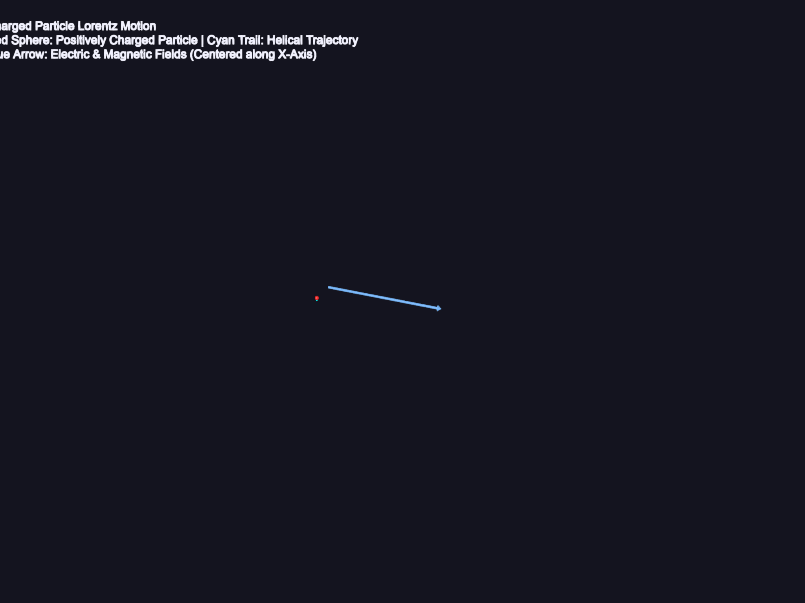

Demos#
Below is a gallery of Demos. A bunch of apps powered by FURY.

Vector Field Visualization with Slicer Actor
Vector Field Visualization with Slicer Actor

Motion of a Charged Particle in Combined Fields
Motion of a Charged Particle in Combined Fields